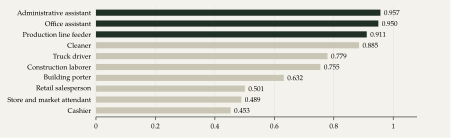
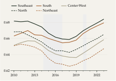
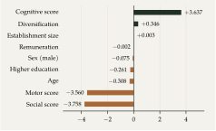
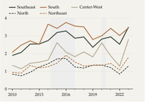
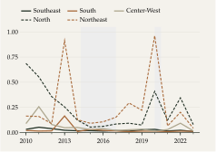
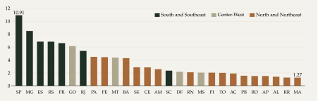

Key findings
A measure of portability. The thesis measures how evenly each occupation is spread across 87 sectors. Administrative assistants (0.957) and office assistants (0.950) can work almost anywhere; cashiers (0.453) and retail salespeople (0.501) are tied to a few sectors.
Who holds portable jobs. Occupations with more cognitive content are more portable; those intensive in social or motor skills are much less so. Workers in diversified regions and larger establishments are also more likely to be in highly portable occupations.
A regional divide. Allocative flexibility, the capacity to absorb shocks by moving workers between sectors, reached 10.91 in São Paulo in 2023 against 1.27 in Maranhão. The South and Southeast lead throughout 2010 to 2023, and sectoral mismatch in the Northeast peaked at 0.96 in 2020.
What drives flexibility. Higher GDP per capita and larger labor markets raise flexibility; sectoral concentration lowers it. These effects are strongest for the most portable workers and fade for the least portable.
Wages adjust where workers cannot move. The elasticity of wages to state unemployment is −0.060 for low-portability workers and −0.054 for high-portability workers.
Policy. Retraining should build cognitive and transversal skills, and less diversified regions need greater productive complexity to lower the cost of adjusting to shocks.
Two ways to adjust to a shock
When demand for labor falls in a region or sector, the market can adjust in two ways. Wages can fall, or workers can move to sectors that are still hiring. Wages in Brazil, as elsewhere, respond only partly and slowly to unemployment, so the second channel, allocative flexibility, matters for how long unemployment lasts and how costly a shock is. That channel is not free: moving to a new sector can mean losing specific human capital, adapting to new tasks and searching with less information.
The thesis argues that the type of occupation largely determines how easily a worker can move. An accountant, a driver or an administrative assistant does similar work in many sectors; a machine operator or an aviation professional usually has to change occupation to change sector. The thesis calls this property portability, measures it for every occupation in the Brazilian formal labor market, and uses it in three connected essays: on the determinants of portability, on how Brazilian regions absorbed the 2015–2016 recession and the COVID-19 pandemic, and on how wages respond to unemployment.
Data
All three essays use RAIS microdata from the Ministry of Labor for 2010 to 2023, restricted to private sector contracts: between 34 and 39 million each year. Each contract belongs to one of 2,719 occupations in the Brazilian Classification of Occupations (CBO) and one of 87 sectors in CNAE 2.0 at two digits. Geography follows the 133 IBGE intermediate regions, the 27 states and the five macro-regions. Skill scores for cognitive, social and motor content come from matching CBO occupations to O*NET. State unemployment rates for the third essay come from IBGE’s PNAD Contínua.
Formal employment is concentrated in a few occupations: the top 1%, between 25 and 27 occupations, account for 42% to 44% of all contracts in every year. Most of these require little cognitive content. Over the period, the share of industrial production workers fell from 26.0% to 21.2%, while service and sales workers rose from 25.3% to 27.1%.
Box 1: The three measures
Portability. Let be the share of employment in occupation that is in sector . Following Darougheh (2024), portability is the complement of the Herfindahl–Hirschman index of that distribution: (1) It is zero when an occupation is confined to a single sector and approaches when it is spread evenly across sectors. It is computed separately for each year.
Allocative flexibility. Following Barros et al. (1997), for region and year , with the share of sector in regional employment, turbulence measures how much the sectoral composition of employment changes, and mismatch measures how unevenly sectors grow: (2) A high means the region absorbed large shifts in its sectoral structure without sectors moving far apart, that is, workers were reallocated efficiently.
Wage curve. Following Blanchflower and Oswald (1994), the log real wage of worker in state and year is regressed on the log state unemployment rate, with individual controls (age, age squared, sex and race) and state and year fixed effects: (3) The equation is estimated separately for high-portability () and low-portability workers.
Essay I: occupational portability
Figure 1 shows the index for the ten largest occupations in 2023. Size and portability are unrelated: retail salesperson, the largest occupation, is concentrated in retail trade, while office and administrative assistants are spread across the economy. Most formal workers are nevertheless in fairly portable occupations, because the large administrative and support occupations score high.
Figure 1: Administrative occupations are the most portable among the ten largest
Portability index of the ten occupations with most formal contracts, 2023. Dark bars: index above 0.9.

Source: RAIS/MTE; author’s calculations.
View data
The average portability of occupations fell from 2012 to 2017 and has been broadly stable since 2018. A slowdown in formal job creation and the 2015–2016 recession, which hit many sectors at once, both limited sectoral mobility. By macro-region (Figure 2), average portability declined until 2018 and then recovered, especially after the pandemic. The Southeast is the most portable region throughout, followed by the South, and the gap between the Southeast and the Northeast widened from 0.031 in 2010 to 0.037 in 2023.
Figure 2: The Southeast has the most portable workforce
Average portability index, by macro-region. Shaded areas: recessions.

Source: RAIS/MTE; author’s calculations.
View data
Sectoral diversity, measured by normalized Shannon entropy of regional employment, rose in 114 of the 133 intermediate regions between 2010 and 2023. The North and Northeast converged towards the more diversified South and Southeast, largely through the growth of retail trade and services.
To see who works in highly portable occupations, the thesis estimates a probit for the 39.3 million workers in 2023 (Figure 3). Holding other characteristics fixed, the cognitive skill score is the strongest positive predictor, while social and motor scores are strongly negative: occupations with a large interpersonal or physical component, such as health, education or construction, tend to be tied to specific sectors. Regional diversification and establishment size also raise the probability, consistent with larger firms needing more support functions outside their core business. Higher education, age, being male and pay all lower it once skill content is controlled for, which points to a split between generalist support occupations and specialized career tracks.
Figure 3: Cognitive skills raise the probability of a portable job; social and motor skills lower it
Probit coefficients. Dependent variable: occupation in the top 5% of portability (index above 0.95), 2023.

Source: RAIS/MTE; author’s calculations. 39.3 million workers; all coefficients significant at 1%.
View data
Essay II: allocative flexibility
The second essay applies the turbulence, mismatch and flexibility indices of Box 1 to the 133 intermediate regions. Flexibility rose in all macro-regions over the period, but the South and Southeast are consistently the highest (Figure 4): the South peaked at 3.65 in 2014 and the Southeast reached 3.49 in 2023. The North and Northeast start from much lower levels, 0.84 and 0.93 in 2010, and are more unstable.
Figure 4: The South and Southeast absorb shocks more efficiently
Average allocative flexibility of intermediate regions, by macro-region. Shaded areas: recessions.

Source: RAIS/MTE; author’s calculations.
View data
Mismatch shows why (Figure 5). In the Southeast and South it generally stays below 0.05, while in the Northeast it jumped to 0.91 in 2013 and 0.96 in 2020, and in the North to 0.41 in 2020: when shocks hit less diversified regions, sectors moved apart and workers were not reallocated.
Figure 5: Mismatch spiked in the North and Northeast during crises
Average mismatch of intermediate regions, by macro-region. Shaded areas: recessions.

Source: RAIS/MTE; author’s calculations.
View data
Intermediate regions ignore migration between them, so the indices were also computed by state (Figure 6). In 2023, São Paulo (10.91), Minas Gerais (8.49), Espírito Santo (6.84) and Rio Grande do Sul (6.83) were at the top, and Maranhão (1.27), Roraima (1.29), Alagoas (1.41) and Amapá (1.52) at the bottom. Rather than converging, states that were already flexible became more so between 2015 and 2023, while the least flexible stayed at low levels throughout.
Figure 6: São Paulo’s flexibility is eight times Maranhão’s
Allocative flexibility by state, 2023.

Source: RAIS/MTE; author’s calculations.
View data
The essay then divides workers into five groups by portability, from group 1 (most portable) to group 5 (least portable), and computes the indices for each group across the 133 regions. Group 1 holds around 84% of formal workers. Table 1 shows that less portable workers face more turbulence and have lower flexibility. The 2015–2016 recession, which reduced demand in many sectors at once, produced more turbulence than the pandemic in every group except the least portable.
Table 1: Less portable workers face more turbulence and adjust less
Median across the 133 intermediate regions, by portability group. Group 1 is the most portable.
| Portability group | Turbulence 2010–16 | Turbulence 2016–21 | Mismatch 2010–16 | Mismatch 2016–21 | Flexibility 2010–16 | Flexibility 2016–21 |
|---|---|---|---|---|---|---|
| All workers | 0.147 | 0.115 | 0.072 | 0.046 | 1.068 | 1.075 |
| 1 (most portable) | 0.134 | 0.113 | 0.070 | 0.050 | 0.904 | 1.057 |
| 2 | 0.220 | 0.182 | 0.152 | 0.167 | 0.704 | 0.683 |
| 3 | 0.293 | 0.207 | 0.400 | 0.164 | 0.371 | 0.601 |
| 4 | 0.284 | 0.265 | 0.359 | 0.340 | 0.440 | 0.425 |
| 5 (least portable) | 0.364 | 0.402 | 0.658 | 0.350 | 0.239 | 0.482 |
Source: RAIS/MTE; author’s calculations. Medians are shown because means are dominated by a few extreme values in the smaller groups.
Finally, regional flexibility is regressed on GDP per capita, the Herfindahl–Hirschman index of sectoral concentration and the size of the regional labor market, separately for each group and period (Table 2). For the most portable workers, richer and larger regions are more flexible and more concentrated regions are less so, in both periods. These relationships weaken and lose significance as portability falls, and the share of variation explained drops from about 0.42 to 0.03. Portable occupations benefit from the diversified commerce and services of large urban centers, the urbanization economies of the literature; the least portable depend more on localization economies within specific sectors.
Table 2: Regional characteristics explain flexibility only for portable workers
Coefficients from regressions of allocative flexibility across intermediate regions, by portability group.
| Group | GDP per capita 2010–16 | Concentration 2010–16 | Size 2010–16 | R² 2010–16 | GDP per capita 2016–21 | Concentration 2016–21 | Size 2016–21 | R² 2016–21 |
|---|---|---|---|---|---|---|---|---|
| 1 (most portable) | 0.313*** | −0.193*** | 0.150*** | 0.42 | 0.409*** | −0.182** | 0.286*** | 0.41 |
| 2 | 0.158*** | −0.186*** | 0.035 | 0.38 | 0.315*** | −0.080 | 0.152*** | 0.37 |
| 3 | 0.099*** | −0.002 | 0.042 | 0.13 | 0.173*** | 0.032 | 0.145*** | 0.16 |
| 4 | 0.150** | 0.067 | −0.032 | 0.03 | 0.103 | 0.055 | 0.026 | 0.03 |
| 5 (least portable) | 0.099 | 0.142 | −0.077 | 0.03 | −0.582 | 0.647 | −0.210 | 0.01 |
Source: RAIS/MTE; author’s calculations. 133 regions (127 for group 5). Concentration: Herfindahl–Hirschman index of sectoral employment. *** p<0.01, ** p<0.05. Standard errors in the PDF.
Essay III: wage flexibility
If workers in portable occupations adjust to shocks by changing sectors, their wages should need to fall less when unemployment rises. The third essay tests this with a wage curve, equation (3), estimated on RAIS for 2014 to 2022, with wages deflated by the IPCA, state unemployment from PNAD Contínua, state and year fixed effects, and standard errors clustered by state.
Both elasticities are negative and significant at 1%, confirming a wage curve in the Brazilian formal market (Figure 7). The response is larger for low-portability workers: a 10% rise in the state unemployment rate, from 8% to 8.8% for example, is associated with real wages 0.60% lower for them and 0.54% lower for high-portability workers, an 11% larger response. This is consistent with allocative flexibility acting as a buffer: portable workers move across sectors and avoid the full brunt of local shocks, while specialized workers absorb them through wage concessions. Both estimates fall within the range of −0.05 to −0.15 found internationally.
Figure 7: Wages of less portable workers respond more to unemployment
Elasticity of real wages to the state unemployment rate, 2014 to 2022. Lines: 95% confidence intervals.
Source: RAIS/MTE; author’s calculations. High portability: index above 0.91, 35.9 million observations. Low portability: 292.9 million observations.
View data
Synthesis and implications
The three essays point the same way. Occupational structure is a key channel through which regional characteristics turn into adjustment capacity. Regions with diversified economies and a larger share of portable occupations, mostly in the South and Southeast, reallocate workers between sectors with less mismatch, and the gap with the North and Northeast widened between 2010 and 2023. For workers, portability moderates the cost of a downturn: those who can move lose less in wages.
Two policy implications follow. First, retraining programs should prioritize cognitive and transversal skills that widen the range of sectors where a worker can be employed, rather than focusing only on highly specialized training. Second, less diversified regions need investment in productive complexity, since a narrow sectoral base limits where displaced workers can go and makes local shocks more costly. More broadly, the welfare effects of economic fluctuations are not uniform: they fall more heavily on workers in occupations with little mobility.
Limitations
The analysis covers only the formal private sector, around 60% of the Brazilian workforce, and leaves out informal workers. Institutional factors such as union density and labor legislation are not modeled. The wage curve does not correct for self-selection into occupations, since no credible instrument is available for a Heckman correction, and the confidence intervals of the two elasticities overlap, so the difference between them should be read as indicative. Annual data also capture only part of adjustments that unfold continuously.
References
Barros, R. P. de et al. (1997). Uma avaliação empírica do grau de flexibilidade alocativa do mercado de trabalho brasileiro. Planejamento e Políticas Públicas 15.
Blanchflower, D. G.; Oswald, A. J. (1994). The wage curve. Cambridge, MA: MIT Press.
Darougheh, S. (2024). Occupation-industry mismatch in the cross section and the aggregate. Journal of Political Economy Macroeconomics 2(3), 375–408.
Shannon, C. E. (1948). A mathematical theory of communication. Bell System Technical Journal 27(3), 379–423.
* The results presented here are under review. Revised estimates and further adjustments will be incorporated into future publications and derived work.